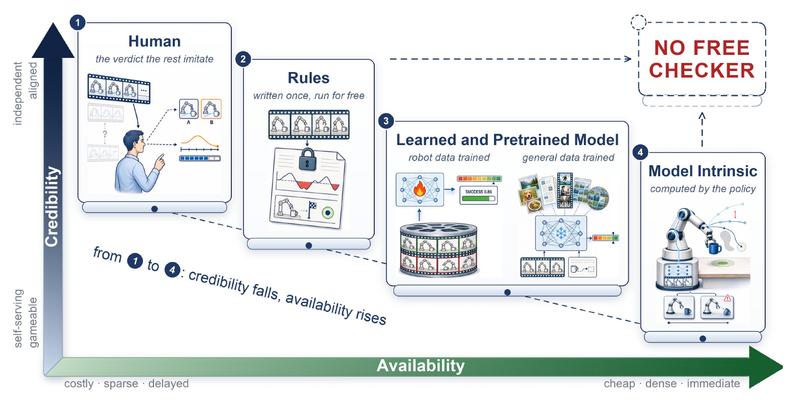
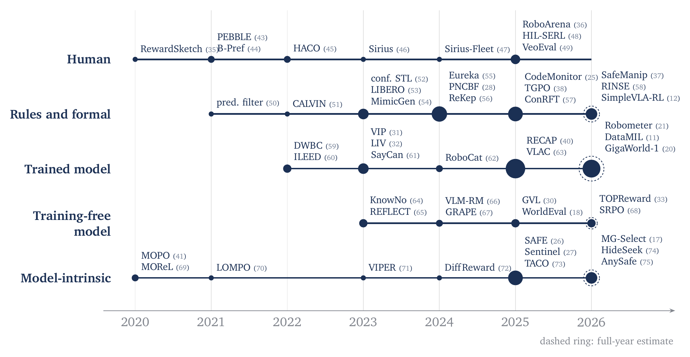
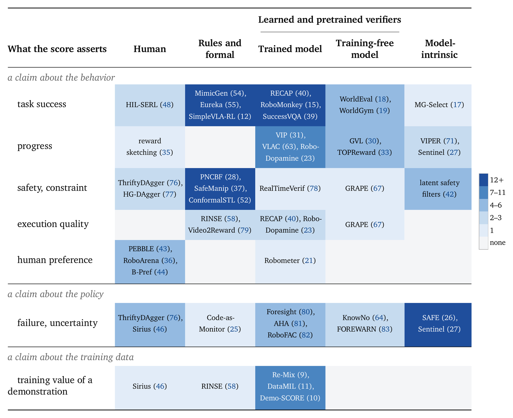
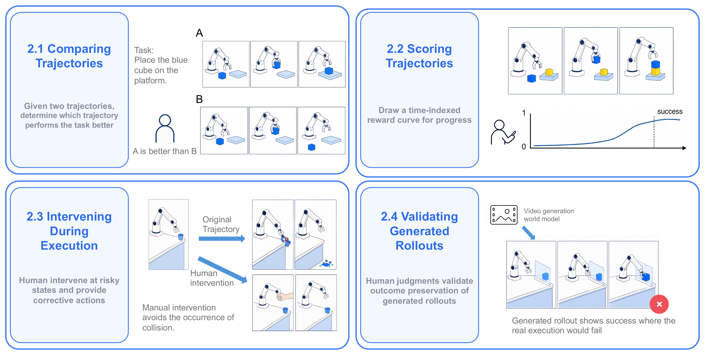
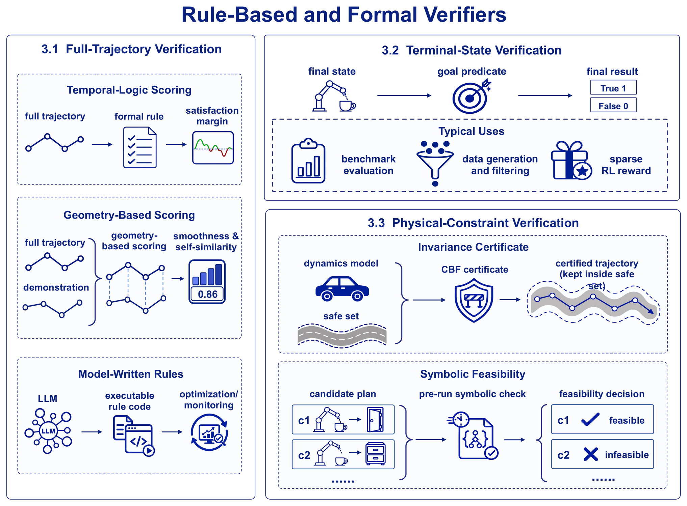
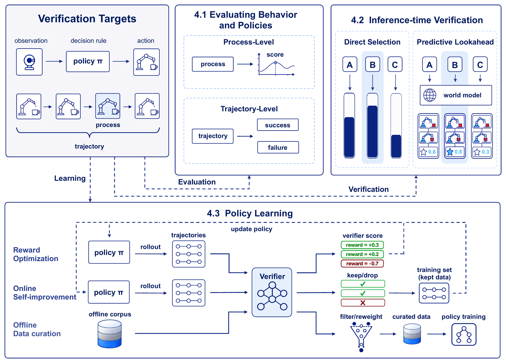
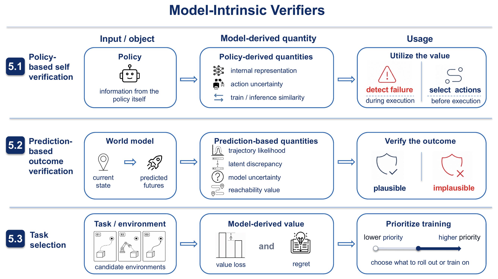

Success has to be inferred
Determining whether a physical task was completed correctly is costly, because success must usually be read out of imperfect sensory observations rather than exact state.
Vision-language-action policies and robot world models are scaling fast, and verification of training data and model behaviour is scaling with them. A curated reading list of 184 works on the mechanisms that supply those verification signals — grouped by who supplies the judgment, and read along two properties: availability and credibility.
A verifier for robot policies reads a candidate behaviour and returns a score for how well it did, used in both policy evaluation and policy training. Such a score is hard to come by in robotics, where success is inferred from a partial observation and every candidate costs a real rollout to try. Under those conditions, different lines of work on verification offer different strengths and limitations.
We survey roughly 150 verifiers and group them by who supplies the judgment: human verifiers, rule-based and formal verifiers, learned and pretrained verifiers, and model-intrinsic verifiers. We characterize the four families along two properties. Availability is how much a verdict costs, how early in a rollout it arrives, and how often it can be asked for, and it rises as verdicts get cheaper, earlier, and denser. Credibility is how much a high score tells us about the task, and it falls as the judgment becomes gameable and self-serving. The four families trade credibility for availability. Regardless of who supplies the judgment, there is no free checker.
We then examine what validates a verifier itself, and how much a high score tells us. We close with nine metrics a paper can report to make a verifier claim checkable, and they give coordinates for the verifiers still to be built.
Keywords robot policy verification; robot learning; policy evaluation; reward models
Obtaining both high availability and high credibility in the physical world is costly. Every family buys a cheaper, denser, earlier verdict by moving the source of judgment closer to the model being evaluated, and the top-right corner stays empty.

Verification signals enter robot learning at four stages: filtering and reweighting demonstrations for pre-training, providing reward signals during policy post-training, ranking candidate actions at inference time, and evaluating policy performance on rollouts generated by world models. We refer to the mechanisms that provide these signals collectively as verifiers.
Four difficulties make a reliable verifier hard to build.
Determining whether a physical task was completed correctly is costly, because success must usually be read out of imperfect sensory observations rather than exact state.
Testing a candidate behaviour may require a real-robot rollout, which consumes physical time and puts large-scale sampling out of reach.
An incorrect action may already have caused task failure or hardware damage by the time the task would have finished, so some checks have to fire mid-motion.
Behaviours differ in progress, safety, and execution quality, which makes a single success-or-failure label insufficient.
The candidate varies the most of the three, running from a single action chunk up to an entire policy, with subtask segments and full trajectories in between.
verifier : (context, candidate) ⟼ score
The context comprises observations, a goal, and possibly a language instruction. The score can be boolean, scalar, vector-valued, or a distribution. The candidate varies the most of the three, running from a single action chunk up to an entire policy, with subtask segments and full trajectories in between.
How much a verdict costs, how early in a rollout it arrives, and how often it can be asked for. It rises as verdicts get cheaper, earlier, and denser.
How much a high score tells us about the task. It falls as the judgment becomes gameable and self-serving.
Because the source of judgment strongly affects both availability and credibility, we group existing methods by that source into four families. Each of the next four sections takes one value.
A person directly judges task outcomes, compares trajectories, or intervenes during execution.
The judgment is determined by predefined criteria: task predicates, temporal-logic specifications, or formal safety conditions.
A neural model produces the judgment, either after task-specific training or directly from pretraining.
The judgment is derived from signals the policy or predictive model already computes: action uncertainty, model disagreement, learned reachability.
Read top to bottom: availability rises and credibility falls. Regardless of who supplies the judgment, there is no free checker.

The four uses below are ordered by whether the score is searched against. Curation and ranking select among candidates produced without access to the score, so an error there averages out over the corpus. A training reward and a runtime gate meet candidates produced by a process searching for the inputs where the score is wrong, so a rare region of that kind is still enough to break the score.
| Use | How candidates arise | Property required | Cost of error |
|---|---|---|---|
| select Curation | fixed corpus, verifier unseen | average accuracy, split by error type | a false positive trains on a failure |
| select Ranking & OPE | non-adversarial sampling | average accuracy, calibration | the wrong checkpoint ships |
| optimize Training reward | closed loop, actively searched | no exploitable region | the policy learns to attack the verifier |
| optimize Runtime gating | closed loop, millisecond budget | no exploitable region, plus latency | hardware damage |

Having grouped the methods, we examine in §6 how a verifier's own error is measured, and why credibility is difficult to establish in robotics. Three metrics appear: agreement with a fixed reference, the policy that results from training on the verifier, and its behaviour under a process searching for the inputs where it is wrong.
§6.4 closes with the nine metrics a paper can report so that a verifier is checkable by someone else, and §7 concludes.
Availability: costly and sparse, because judgments take human effort. Credibility: a direct reference to task intent, although it may still be subjective or inconsistent. This family appears mostly as the small sample that validates the other three.
15 cataloged works
Two trajectory segments side by side; the person picks the better one. Used directly for ranking, or as supervision for a learned reward model.
A curve drawn over a replay gives a score at every time step, not one label per pair.
Human-gated and robot-gated takeover. The difference is who decides to intervene; the person still supplies the correction.
Outcome-preservation ratings on world-model video. A model tuned on those ratings then carries that reference to scale, rating the rest of the corpus.
Availability: inexpensive and repeatable, once the required state information is available. Credibility: strong and sometimes formal guarantees — but only when the predefined criteria, state estimates, and dynamics assumptions accurately represent the task.
43 cataloged works
Signal temporal logic scored over a run, returning a real-valued satisfaction margin instead of a bare pass or fail — sometimes with a conformal interval around it.
Smoothness and self-similarity read off the shape of the path itself, with no task specification written by hand.
A language model writes the reward function or the monitor; the generated code is what decides. Only the optimization branch ranks its own output against the task.
A true/false test on the final state. It needs exact object pose, so it is confined to simulation — where it determines every number the benchmark reports.
The same free check runs the generate-and-keep loop, so generation and verification become one procedure.
The success bit as the only reward, deliberately without shaping, value functions, or a reward model.
An invariance certificate proving the robot stays inside a safe set, for every trajectory the dynamics can produce. The theorem applies to the exact value function; a network approximating it carries the guarantee only with a separate verification step.
A pre-run check that a plan is physically possible at all, before anything moves.
Availability: inexpensive to query, and dense across many tasks and trajectories. Credibility: dependent on model accuracy, calibration, and generalization beyond the data the model was trained or validated on. The largest group in this survey.
55 cataloged works
A temporally localized score — progress, a stage, a per-frame value — assigned inside a rollout rather than after it.
Did the drawer open? One holistic verdict for a completed rollout, aggregated into a policy ranking.
Sample several candidate actions, skills, or plans, score them, and execute the best — with the policy weights left frozen.
Roll a learned model forward and judge the predicted consequence, either to pick a candidate or to monitor the action already committed to.
The verifier's output becomes a reward, an advantage, or a preference objective, and the policy parameters move with it.
A verifier decides which newly generated rollouts re-enter training, closing a generate-filter-train loop on the policy's own experience.
Scoring the training value of a demonstration, from the trajectory alone, from the corpus around it, or from the policy it produces.
Availability: the easiest to obtain, because these signals require little or no additional computation or external supervision. Credibility: they describe properties of the model itself rather than task performance directly, so their relation to actual task success is indirect.
25 cataloged works
A predictor over the policy's own internal representations raises an alarm mid-execution, often with a conformally calibrated false-positive rate.
Pick the candidate the policy is most confident in, or most familiar with, before any of them is executed.
How ordinary a trajectory looks to a video model, or how far the observed outcome lands from the one the model predicted.
An imagined rollout is scored down where the learned dynamics model disagrees with itself about it.
Whether failure can still be avoided from here, computed over a world model's predicted dynamics rather than over how familiar the action looks.
The same quantities read about a whole environment instead of one action, deciding what the policy trains on next.
It is important to measure a verifier's own error, because a verifier is used in four places and an error in it reaches all of them: the training data, the reported ranking, the reward, and the executed action. In each of the four it looks like a correct result.
Throughout, a score is what a verifier returns about a behaviour, and a metric is what we compute about the verifier itself. Each demands more of the verifier than the last, and the second is expensive enough to be rare while the third is largely undeveloped in robotics.
Fix the rollouts, fix a reference judgment, and report how often the verifier agrees with it. Benchmarks built this way exist and report that error as their result. An agreement rate still leaves out three things: the error of the reference it was measured against, the interval around the rate itself, and the kind of rollout it was measured on.
A verifier is built to train a better policy or filter a better corpus, and that outcome — not agreement with a reference — is what a paper finally wants. It is defined through a training run rather than a labelled test set, so it is expensive and correspondingly rare. The two numbers diverge, because training moves the policy toward exactly the rollouts the verifier gets wrong.
A verifier used as a training reward or a runtime gate has to meet one more requirement: that no region of inputs makes the score wrong in a way a search can reach. Reward hacking is what happens when that fails. It is well studied on the language side; in robotics the same question is largely undeveloped, and a shared benchmark that holds the candidates fixed and scores each one's exploitability has yet to appear.
Nine metrics that make a verifier claim comparable across papers, split by whether the score is used to select or optimized against. They are set out in full below.
It inflates the reward gain the verifier reports. Every agreement rate and every downstream gain collected in this survey was measured on candidates that ran no search against the verifier, so both numbers overstate what the verifier is worth to a policy trained on it.
It invalidates the calibration the verifier was released with. A conformal margin carries its stated coverage only while the rollouts judged later come from the same pool as the held-out set — the requirement called exchangeability. Training a policy against a verifier moves that distribution, and moves it toward the region where the verifier is wrong, so a correction made once expires with the next round of training.
They split by whether the score is used to select or optimized against. The upper block is largely a matter of reporting what was already measured; the lower block requires running the verifier against a search, which robotics has yet to do.
| Report | How it is computed | What it settles |
|---|---|---|
| select Independent rollouts | counted per condition, for every success rate given | the confidence interval can be rebuilt from it |
| select False positive and false negative rate | separately, each with the number of human labels behind it | a false positive trains on a failure; a false negative discards usable data |
| select Rollout type | teleoperated, scripted, or sampled from the policy being judged | a verifier scoring generated rollouts needs its error measured there |
| select Agreement with human judgment | agreement rate, label count, and agreement between two annotators on a double-labelled subset | how far the verifier sits from the labels, and the labels from each other |
| select Calibration | score minus the observed success rate of the rollouts in that score bin | required of any continuous score consumed as a reward |
| select Cross-embodiment transfer | error on a held-out embodiment minus error on the embodiments in training | whether the verifier still works on a new robot |
| optimize Fraction of proxy gain that transfers | Δpanel / Δproxy, scoring the first and last checkpoint under the training verifier and under a panel the policy never trained against | separates a real gain from one that only satisfies the training verifier |
| optimize Change in judge error over training | judge error on initial-checkpoint rollouts and on final-checkpoint rollouts, labelled the same way | how much of the verifier's reliability the optimization consumed |
| optimize False positives under search | candidates found by searching the verifier for inputs it wrongly accepts | the region a policy trained on this verifier is driven toward |
A verifier’s error rate depends on the kind of input as much as on the verifier, so an accuracy reported without naming the input it was measured on omits one of the two things that determine it.
Filed by what each paper is, not by the argument the survey cites it for — so a category can be searched without reading the survey first. Every entry carries its bibliography key.
A paper belongs here if it produces or validates a verification signal for robot policies. File it once, in the section where its construction is treated.
Open an issue or a pull request with a canonical paper URL and the judge source it belongs to. Include code or project links only when they are official. If a record here is filed under the wrong construction, say so — the assignment reflects our reading rather than authors' self-descriptions.
Original text and figures in the repository are released under the MIT License. Linked papers, repositories, project pages, names, and third-party metadata retain their own terms.